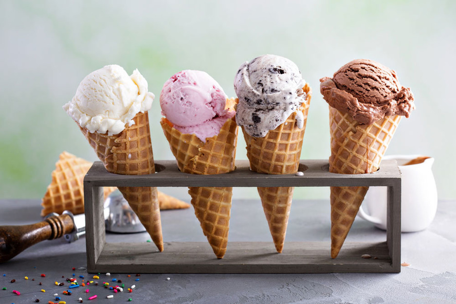

Порций: 5
Калории: 223 кКал/100 г
Время приготовления: 8 часов
Ингредиенты:
Как приготовить мороженое: Нагрейте молоко и добавьте взбитые желтки с сахаром. Постоянно помешивая, заварите крем — по консистенции должна получиться текучая сметана.
Взбейте сливки до устойчивых пиков и аккуратно смешайте с охлажденным желтковым кремом.
Переложите в лоток и замораживайте в течение 7 часов.

Порций: 10
Калории: 270 кКал/100 г
Время приготовления: 9 часов
Ингредиенты:
Как приготовить мороженое: Желтки разотрите с сахаром. Добавьте молоко и ванилин. Постоянно помешивая, нагревайте смесь, но не доводите до кипения. Когда крем по консистенции станет похож на сгущенку — снимите с плиты и остудите.
Взбейте сливки до стойких пиков и аккуратно смешайте с остывшим кремом. Перемешайте до однородной структуры и переложите в лоток. Замораживайте не меньше 8 часов.

Порций: 10
Калории: 359 кКал/100 г
Время приготовления: 7 часов
Ингредиенты:
Как приготовить мороженое: Сливки взбейте до стойких пиков. Добавьте вареную сгущенку, арахисовую пасту, перемешайте. Добавьте мягкую карамель и еще раз взбейте. Разложите мороженое по формам и заморозьте.
Когда мороженое затвердеет, достаньте его из формочек и посыпьте с каждой стороны дробленым арахисом, слегка вдавливая его. Снова поставьте замораживаться.
Растопите плитку шоколада. Окуните каждое мороженое в глазурь. Сверху еще раз посыпьте измельченным арахисом и отправьте в морозилку до полной готовности.
© 2021 Feel The Vibe. All Rights Reserved | Desing by Alex Lobysov